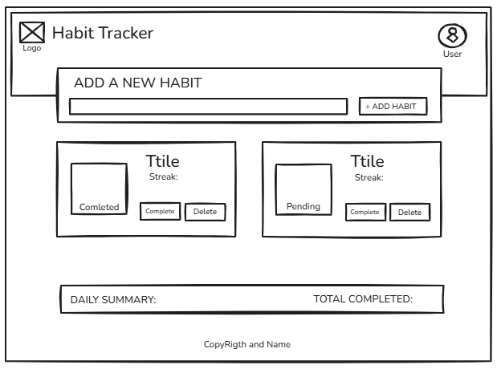
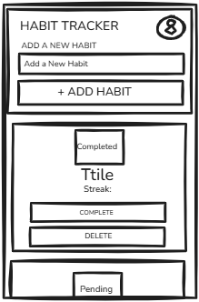

Site Name
HabitFlow (or simply "Daily Habit Tracker"). This name reflects the goal of maintaining a seamless consistency in daily routines.
Site Purpose
A web application that helps users track their habits during the day, visualize their progress over time, and build consistency using principles of behavioral science.
Target Audience
Individuals interested in personal development, improving their daily productivity, and building positive routines through a simple, trackable system.
Scenarios
- How can I quickly check off a habit I just completed today?
- Where can I view my completion statistics for the current week?
Color Schema
A palette focused on productivity and calmness (blue and green tones), including state colors for habit tracking (success, warning, danger).
Core Palette
(Primary)
(Secondary)
(Background)
Alternatives & States
(Primary Light)
(Success)
(Warning)
(Danger)
Typography
Headings: 'Montserrat', sans-serif (Provides a modern and strong look for titles).
Paragraphs/Body: 'Roboto', sans-serif (Highly readable for the tracking interface).
Wireframes
Desktop View

Mobile View
